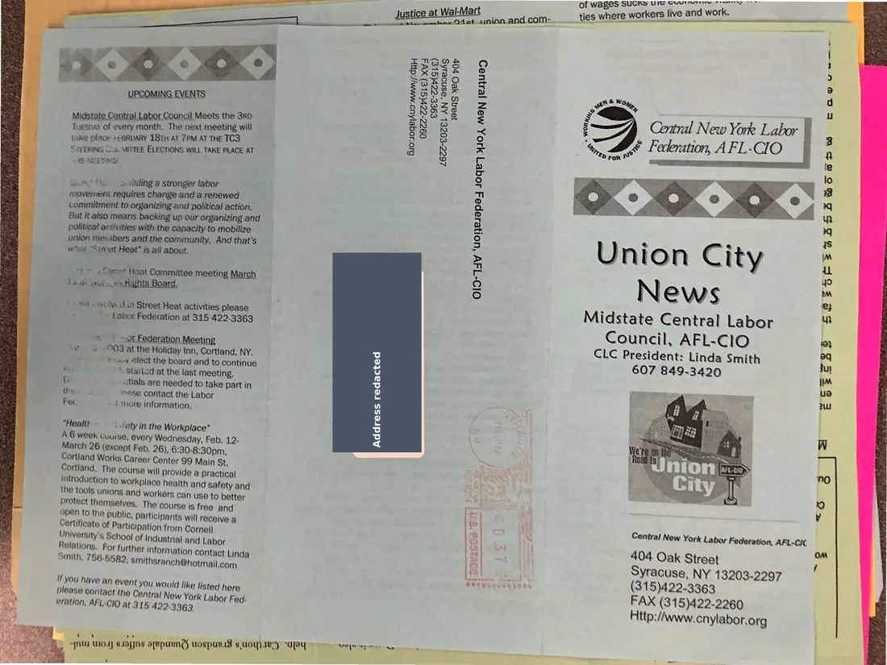
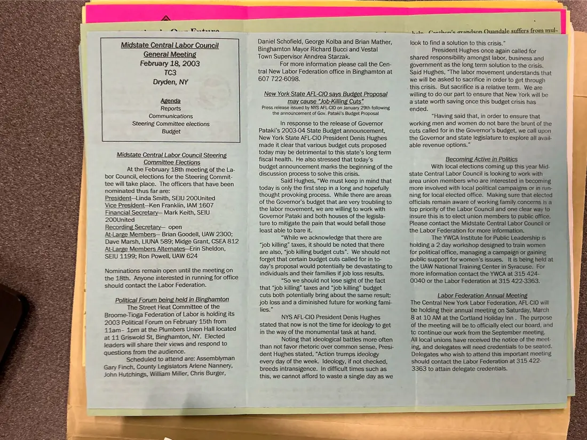

Newsletter, 2 pages
Union City News, Midstate Central Labor Council, February 2003
February 2003
Announces the February 18, 2003 general meeting in Dryden and covers Steering Committee elections, the New York State AFL-CIO's response to the governor's budget, and a legislative forum.
Download or cite this itemPages


(open zoom view)A personal home address has been covered on this page.
Read the page text (machine-read, many errors)
This text was generated automatically from the photograph and has not been corrected. The image is the authoritative record.
of wages SUCKS Ul Gevirvreny wresserny aay RR ae | ies where workers live and work. ie SS Justice at WalMat se and.com-__ties w ke ee Oath ee a Ses . ZENIGLlE OC > exag® @ Fy Foneg = d $ aor oF : oe See SNS2s ¢ Midst i he 3ro Nae es A yi ate Ce NU! LAVor Council Meets th A cs wD ~< : Tuesnay of every month. The next meeting will 88 8 o F take place FEBRUARY 18TH AT 7PM AT THE TCS g 8 x ‘- STEERING Con MITTEE ELECTIONS WILL TAKE PLACE AT © i Be 1S MEERNGH S 3 t os > 0 pes © ud Sy 2. | pea ’ Ry : ee activitie: ° e : sania tapos badahe > NtIon City i ay ee he Ww o ae iy ce Heat Comr meeting March 2) N : - ike. : = v nts Board. : (oe) e $ fS © 16 cavolved in Street Heat activities please Midstate Central Labor | “ re ts _ + Labor Federation at 315 422.3363 Counci I. AFL-C lo e TS = on ion Meeti CLC President: Linda Smith ) ag tie rye earn ats mama nd, NY 3 607 849-3420 ju ee eee at the Holiday Inn, Cortla NY, es : | ie Li + 4 taany elect the board and to continue ra im a gee ‘ Staitod at the last meeting. te iD .. » ontials are needed to take part in @ 2 Ma ine “’ase contact the Labor F : Fec “ # More information. iH hen “Health ~ ©: fetyin the Workplace” = A 6 week couse, every Wednesday, Feb, 12- < March 26 (except Feb, 26), 6:30-8:30pm, Cortland Works Career Center 99 Main St, Cortland. The course will provide a practical introduction to workplace health and safety and the tools unions and workers can use to better oa | protect themselves, The course is free and FS rs open to the public, participants will receive a | my Central New York Labor ederation, AFL-CK ie Certificate of Participation from Cornell le ; ; University's Schoo! of Industrial and Labor ) <a : n08 Oak Street f Relations. For further information contact Linda lf | Syracuse, NY 13203-2297 “_ Re j sletets j ’ j eet f ‘ . Smith, 756.5582, Smithsranch@hotmail.com rorereercre te (315)422.3363 if You have an event you would like listed here rAX (S ' 5)422-2260 please contact the Central New York Labor Fed. Http: /www. enylabor.org eration, AFL-CIO at 315 422.3363, —_ | ‘ = te he oe ‘ 1, fi ims Me dee As foe ali ell ota ~ ze Sagres ~_ ae a — jut wo. suas orepunnd ospuesd pee “aad ase e i, 7 ae: ee Se ee


(open zoom view)Read the page text (machine-read, mostly readable)
This text was generated automatically from the photograph and has not been corrected. The image is the authoritative record.
tral Labor i tii February 18, 2003 Dryden, NY uncil Agenda Reports Communications Steering Committee elections Budget Midstate Central Labor Council Steering Committee Elections At the February 18th meeting of the La- bor Council, elections for the Steering Commit- tee will take place. The officers that have been nominated thus far are: PresidentLinda Smith, SEIU 200United Vice President—Ken Franklin, IAM 1607 Financial Secretary— Mark Keith, SEIU 200United Recording Secretarny— open At-Large Members— Brian Goodell, UAW 2300; Dave Marsh, LIUNA 589; Midge Grant, CSEA 812 At arge Members Alternates—Erin Sheldon, SEIU 1199; Ron Powell, UAW 624 Nominations remain open until the meeting on the 18th. Anyone interested in running for office should contact the Labor Federation. Political Forum being held in Binghamton The Street Heat Committee of the Broome-Tioga Federation of Labor is holding its 2003 Political Forum on February 15th from 4iam- ipm at the Plumbers Union Hall located at 11 Griswold St, Binghamton, NY. Elected leaders will share their views and respond to questions from the audience. Scheduled to attend are: Assemblyman Gary Finch, County Legislators Arlene Nannery, John Hutchings, William Miller, Chris Burger, Daniel Schofield, George Kolba and Brian Mather, Binghamton Mayor Richard Bucci and Vestal Town Supervisor Anndrea Starzak. For more information please call the Cen- tral New Labor Federation office in Binghamton at 607 722-6098. New York State AFL-CIO says Budget Proposal may cause “Job-Killing Cuts” Press release issued by NYS AFL-CIO on January 29th following the announcement of Gov. Pataki's Budget Proposal In response to the release of Governor Pataki’s 2003-04 State Budget announcement, New York State AFL-CIO President Denis Hughes made it clear that various budget cuts proposed today may be detrimental to this state’s long term fiscal health. He also stressed that today’s budget announcement marks the beginning of the discussion process to solve this crisis. Said Hughes, “We must keep in mind that today is only the first step in a long and hopefully thought provoking process. While there are areas of the Governor's budget that are very troubling to the labor movement, we are willing to work with Governor Pataki and both houses of the legisla- ture to mitigate the pain that would befall those least able to bare it. “While we acknowledge that there are “job killing” taxes, it should be noted that there are also, “job killing budget cuts”. We should not forget that certain budget cuts called for in to- day’s proposal would potentially be devastating to individuals and their families if job loss results. “So we should not lose sight of the fact that “job killing” taxes and “job killing” budget cuts both potentially bring about the same result: job loss and a diminished future for working fami- lies.” NYS AFL-CIO President Denis Hughes stated that now is not the time for ideology to get in the way of the monumental task at hand. Noting that ideological baitles more often than not favor rhetoric over common sense, Presi- dent Hughes stated, “Action trumps ideology every day of the week. Ideology, if not checked, breeds intransigence. In difficult times such as this, we cannot afford to waste a single day as we Lain Carthan'e erandson Quandale suffers from mul- ] look to find a solution to this crisis.” President Hughes once again called for shared responsibility amongst labor, business and government as the long term solution to the crisis. Said Hughes, “The labor movement understands that we will be asked to sacrifice in order to get through _this crisis. But sacrifice is a relative term. We are willing to do our part to ensure that New York will be a state worth saving once this budget crisis has ended. “Having said that, in order to ensure that working men and women do not bare the brunt of the cuts called for in the Governor's budget, we call upon the Governor and state legislature to explore all avail- able revenue options.” Becoming Active in Politics With local elections coming up this year Mid- state Central Labor Council is looking to work with area union members who are interested in becoming more involved with local political campaigns or in run- ning for local elected office. Making sure that elected _ officials remain aware of working family concerns is a Please contact the Midstate Central Labor the Labor Federation for more information. The YWCA Institute for Public Leaders holding a 2 day workshop designed to train for political office, managing a campaign o public support for women’s issues. It is being held at the UAW National Training Center in Syracuse. For more information contact the YWCA at 315 424- 0040 or the Labor Federation at 315 422-3363. Labor Federation Annual Meeting The Central New York Labor Federation, AFL-CIO will be holding their annual meeting on Saturday, March 8 at 10 AM at the Cortland Holiday Inn . The purpose of the meeting will be to officially elect our board, and to continue our work from the September meeting. All local unions have received the notice of the meet- ing, and delegates will need credentials to be seated. Delegates who wish to attend this important meeting should contact the Labor Federation at 315 422- 3363 to attain delegate credentials.
See something wrong, or recognize a person or event? Send a correction. If you hold rights in this item or think it should not be public, write to the same address.